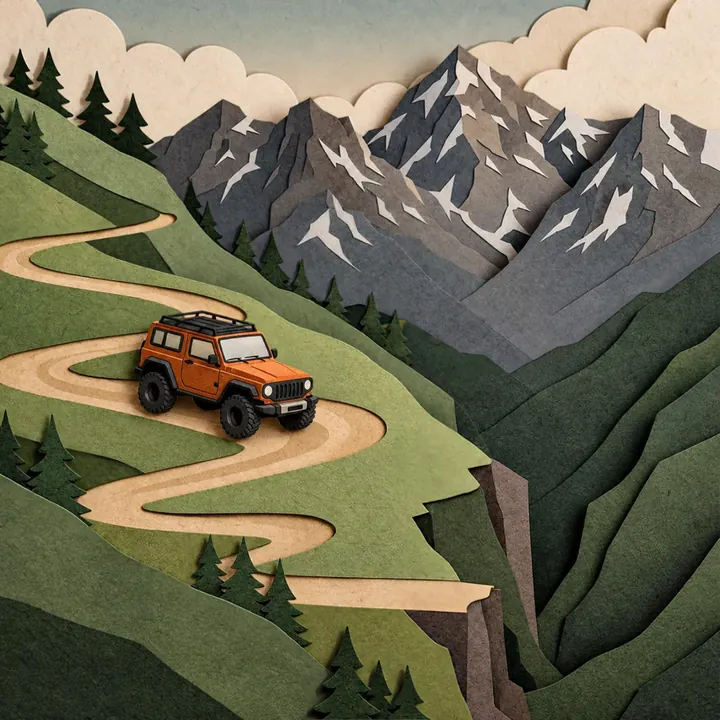
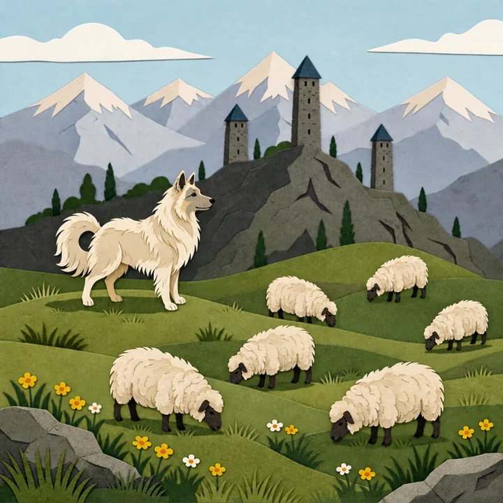

- До парка
- 195 км
- Абано
- 2 826 м
- Сезон
- июнь–октябрь
- Аптек
- нет
- Скорая
- 112
Статья входит в справочник о медицине в Грузии.
Тушетия: горный край на северо-востоке
Это труднодоступный горный край с одноимённым национальным парком. Нацпарк называет Тушетию отдалённым районом. По Википедии (на английском), Тушетия — историческая область на северо-востоке Грузии площадью 969 км², её центр — село Омало.
Овцы. Мужчины здесь, пишет Википедия, традиционно проводили лето с отарами на горных пастбищах — с апреля по октябрь.
Нацпарк. На странице парка (на английском) сказано: на охраняемых территориях 11 туристических маршрутов — на 1, 2, 3, 4 и 6 дней. Среди туров — пешие, велосипедные и конные. Контакты администрации — в двух сёлах Ахметского муниципалитета: в Омало и в Квемо-Алвани.
Дорога в Тушетию через перевал Абано
Последний отрезок пути — только для внедорожника. В гиде для посетителей (на английском) нацпарк пишет: от Квемо-Алвани до Омало можно добраться только на внедорожнике.
Расстояния и время. Средние цифры со страницы парка «Как добраться» (на английском):
| Откуда — куда | Расстояние | Время в пути |
|---|---|---|
| Тбилиси — Квемо-Алвани (через Гомбори) | 130 км | около 1 ч 30 мин |
| Квемо-Алвани — Омало | 80 км | около 4 ч |
| Тбилиси — нацпарк | 195 км | около 6 ч |
| Телави — нацпарк | 105 км | 4 ч 30 мин |
Такси. Из центра Квемо-Алвани к парку, по той же странице, ежедневно ходят внедорожные такси. Тарифы не называем: официального источника нет.
Перевал. Википедия (на английском) называет перевал Абано (2 826 м) одним из самых высоких автомобильных перевалов Кавказа. Он соединяет Кахетию с Тушетией. Покрытие разбито, проехать можно только на машинах 4×4.

Ливни и оползни. GOV.UK в советах о безопасности (на английском) пишет: дороги вне городов часто плохие и плохо освещены, а ливни, наводнения и снег на высоте могут сделать дороги и мосты трудными или непроезжими, особенно в отдалённых районах. Оползни — обычное дело.
Сезон и ограничения. Сроков работы дороги нацпарк не называет. Туристический сезон у парка — с июня по октябрь. Есть ли ограничения сейчас — проверьте на georoad.gov.ge (на английском) и спросите водителя или хозяина жилья.
Наш совет.
- Нет опыта бездорожья — поезжайте с местным водителем.
- Выезжайте рано: доезжать лучше засветло.
- Оставьте запасной день на случай, если погода закроет дорогу.
Про горные дороги — в нашем путеводителе для водителей.

Высота и горная болезнь
Перевал выше черты, с которой британский сайт о здоровье путешественников связывает горную болезнь. TravelHealthPro (на английском) пишет: она бывает у тех, кто быстро поднимается на высоту, обычно выше 2 500 м. На перевале — 2 826 м.
Факторы риска. Среди факторов риска TravelHealthPro называет скорость подъёма, перепад высоты и высоту, на которой вы ночуете. Симптомы обычно появляются через 6–10 часов после подъёма выше 2 500 м. Высоту сёл за перевалом не даём: сверенной цифры нет.
Постепенно. Главное, по TravelHealthPro, — подниматься постепенно, с днями отдыха. С хроническими болезнями — до поездки к врачу.
Опасность. TravelHealthPro предупреждает: тяжёлая горная болезнь опасна для жизни, нужна срочная помощь — звоните 112. Подробнее о высоте — в путеводителе по Гудаури.
Омало и нацпарк Тушети
Омало — центр Тушетии. Здесь, по данным нацпарка, один из контактов его администрации. Правила для маршрутов нацпарк даёт в гиде для посетителей.
Перед маршрутом парк просит связаться с его администрацией.
Чего нельзя:
- подходить к краю ущелья ближе чем на полметра;
- быстро двигаться при плохой видимости — в туман, в высоких кустах или траве;
- заходить на территорию местных святынь.
Свинина. По древней традиции, пишет нацпарк, свинья для местных — табу, блюда из свинины здесь под запретом. Привозить свинину в Тушетию местные считают неуважением.
Святыни. По местным традициям женщинам нельзя заходить в святыни и святилища, а по правилам парка на территорию местных святынь не заходит никто из гостей.

Наш совет.
- Проверьте продукты: никакой ветчины, бекона и свиной колбасы.
- Не уверены, святое ли место, — спросите хозяев и оставайтесь снаружи.
- В тумане остановитесь и переждите.
Нет аптек и банкоматов: что взять
Всё нужное везите с собой. Нацпарк предупреждает: Тушетия — отдалённый регион, здесь нет заправок, аптек, салонов красоты, банков, банкоматов и обменников.
Совет парка: плотные брюки, высокая обувь, еда и вода с собой на маршрут.
Наличные. GOV.UK советует брать достаточно наличных лари, если едете в сельские и отдалённые районы.
Наш совет: соберите всё на всю поездку.
- Лекарства — на все дни и запасные, в оригинальных упаковках.
- Топливо. Заправок нет: рассчитайте дорогу туда и обратно или поезжайте на такси.
- Еда и вода — на каждый маршрут.
- Одежда — плотные брюки, высокая обувь, тёплый слой.

Пастушьи собаки
В сезон псы стерегут отары, и укус или даже царапина — повод сразу к врачу. Нацпарк предупреждает: в туристический сезон можно встретить пастушьих собак.
Бешенство. GOV.UK в советах о здоровье (на английском) пишет: лечение есть в Тбилиси и крупных городах; укусила или поцарапала собака — сразу к врачу.
Наш совет. После укуса прервите поездку и спускайтесь. Лечение, по GOV.UK, есть в Тбилиси и крупных городах. Ближе всех из городов в списке парка — Телави, 105 км и 4 ч 30 мин. По дороге позвоните 112 и спросите, куда ехать за прививкой.
Прививка. Правительство Канады советует до поездки обсудить с медиком прививку от бешенства.

Наш совет: рядом с отарой.
- Обходите её по широкой дуге.
- Не бегите, не кормите и не гладьте псов.
- Рядом пастух — подождите, пока он их отзовёт.
Что делать после укуса — в путеводителе о бешенстве.
Где врач
GOV.UK в советах о безопасности пишет: если в походе что-то случится, экстренная помощь может быть ограничена. Наш совет. Рассчитывайте, что помощь будет идти долго.
Медпомощь. Вне Тбилиси, по GOV.UK, она ограничена, а в отдалённых районах к ней может быть трудно попасть. Правительство Канады (на английском) добавляет: экстренные службы могут не добраться до сельских районов.
Срочно — 112. Номер дают и GOV.UK, и гид нацпарка. Попросите скорую.
Клиники. Телави — в 105 км от нацпарка Тушети, по данным парка. Клиники города — в каталоге клиник Телави на 100doc.ge.
Полис. Для въезда в Грузию иностранцу нужен полис с покрытием не меньше 30 000 лари — подробнее в разделе о полисе для въезда.
Наш совет. Сохраните 112 и номер хозяина жилья. Скажите хозяевам, куда идёте и когда вернётесь. Диспетчеру сначала назовите село и маршрут.
Частые вопросы
Можно ли доехать до Тушетии на обычной машине?
Нет. От Квемо-Алвани до Омало, по нацпарку, — только на внедорожнике, а через перевал, по Википедии, проходят лишь машины 4×4.
Когда открыта дорога в Тушетию?
Сроков работы дороги нацпарк не называет. Туристический сезон у парка — с июня по октябрь. Есть ли ограничения сейчас — проверьте на georoad.gov.ge.
Сколько ехать из Тбилиси?
До нацпарка — 195 км и около 6 ч на машине, пишет нацпарк. По той же странице: Тбилиси — Квемо-Алвани 130 км и около 1 ч 30 мин, дальше до Омало ещё 80 км и около 4 ч, только на внедорожнике.
Есть ли в Тушетии аптеки и банкоматы?
Нет: ни аптек, ни заправок, ни банков, ни банкоматов. Лекарства и наличные везите на всю поездку.
Опасны ли пастушьи собаки?
Они охраняют отары. Наш совет — держитесь подальше и не бегите. Укус или царапина — сразу к врачу из-за риска бешенства, советует GOV.UK.
Бывает ли горная болезнь на перевале?
Перевал Абано — 2 826 м, выше черты 2 500 м, с которой TravelHealthPro обычно связывает горную болезнь. Риск, по TravelHealthPro, зависит от скорости подъёма, перепада высоты и высоты ночёвки. Симптомы обычно появляются через 6–10 часов после подъёма выше 2 500 м.
Где ближайшая больница?
Официального списка медпомощи в самой Тушетии мы не нашли. Из городов, до которых парк даёт расстояние, ближе всех Телави — 105 км. Срочно — 112.
Источники
- Национальные парки Грузии: страница парка и предупреждения для посетителей (на английском)
- Национальные парки Грузии: гид для посетителей и правила парка (на английском)
- Национальные парки Грузии: как добраться — расстояния и время в пути (на английском)
- georoad.gov.ge: ограничения движения на дорогах (на английском)
- Википедия: Tusheti — площадь, центр, отары (вторичный источник) (на английском)
- Википедия: Abano Pass — высота перевала и машины 4×4 (вторичный источник) (на английском)
- TravelHealthPro: Altitude illness — высота ночёвки, 2 500 м, постепенный подъём (на английском)
- GOV.UK: Health — бешенство, медпомощь вне Тбилиси, 112 (на английском)
- GOV.UK: Safety and security — дороги, оползни, наличные, помощь в походе (на английском)
- Правительство Канады: экстренные службы в сельских районах, прививка от бешенства (на английском)
Это справочная информация, а не медицинская консультация: решение о лечении принимает врач. Что открыто на месте, уточняйте там же. Проверено 19 ноября 2026 года.